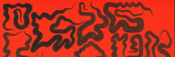
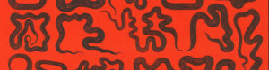
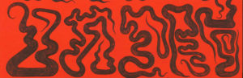
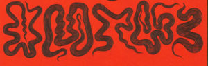

Rusco linguacciuto 2021
«Le mie previsioni sono queste: ogni lingua si concentrerà attorno a due poli: un polo di immediata traducibilità nelle altre lingue con cui sarà indispensabile comunicare, tendente ad avvicinarsi a una sorta di interlingua mondiale ad alto livello; e un polo in cui si distillerà l’essenza più peculiare e segreta della lingua, intraducibile per eccellenza, e di cui saranno investiti istituti diversi come l’argot popolare e la creatività poetica della letteratura.»
Italo Calvino, L’antilingua, Il Giorno (1965)
«Le parole costruiscono mondi e il linguaggio è una delle grandi forze geologiche dell’Antropocene. »
Robert MacFarlane, Underland, Einaudi (2019)
Dove stiamo andando, noi e l’Antropocene? Partendo dal tema di quest’anno — “scarti” — a Scienceground 8/5 ci interroghiamo anche sul linguaggio, cimentandoci in una della attività umane che produce scarti in maggior quantità: la traduzione.
La nostra proposta nasce dall’osservazione di due travolgenti fenomeni del nostro tempo. Da un lato il predominio della lingua inglese, utilizzata come interlingua mondiale ad alto livello con sempre maggiori pretese di neutralità e universalità. Dall’altro il crescente utilizzo di software di traduzione automatica basati su algoritmi che sembrano sempre più intelligenti.
Tutto questo — crediamo — rende doverosa una discussione sulla portata che queste tendenze hanno o avranno sul linguaggio e il nostro modo di utilizzarlo. Dobbiamo reagire? Dobbiamo assecondare? Noi proponiamo di GIOCARE!
Vogliamo farlo usando la nostra creatività e alcuni strumenti classici della traduzione, cercando di sfruttare al meglio le potenzialità della nostra lingua per (ri)tradurre parole legate ai temi affrontati durante Festivaletteratura 2021. Abbiamo scelto parole inglesi che generalmente non vengono tradotte, forse perché l’inglese suona più immediato e autorevole, o forse perché non si trovano alternative efficaci. Le troveremo noi?
Fantasticando intorno a termini come greenwashing, data mining, drosscape e landship, vi e ci invitiamo a mettere in luce le varie fasi e logiche del processo traduttivo, ricercando insieme soluzioni fuori dalla portata di qualunque algoritmo. Il gioco starà nello scoprire connessioni, valutare opposizioni e — soprattutto! — suggerire scarti di significato.
Nel farlo, prenderemo insieme coscienza delle motivazioni che ci spingono a scartare alcune parole in favore di altre e, alla fine, convincerci della validità di tali motivazioni, realizzando che una buona traduzione non passa solo attraverso la correttezza linguistica, ma la traduzione è un attività sociale.

REGOLE DEL GIOCO
- Scegli una delle parole proposte
- Leggi attentamente la definizione proposta e fai eventuali ricerche per approfondire meglio il tema
- Individua nella definizione i concetti chiave che ti piacerebbe fossero mantenuti nella traduzione italiana
- Analizza la struttura della parola nella lingua di partenza e valuta se riproporla in italiano
- Cerca come sono state tradotte parole simili, se ne esistono
- Cerca la traduzione degli elementi che la compongono
- Inizia a scartare le varie possibilità, fai connessioni e combina concetti
- Usa tutta la tua creatività per proporre una traduzione, motivando la tua risposta (se possibile raccontaci anche degli scarti prodotti lungo il percorso)
- Inviaci la tua proposta:
- compilando il form online: https://docs.google.com/forms/d/10PcYrdantOStX9f00gH-7wBEmFzpbV2uJqdU24bC8lk/edit
- (in forma cartacea lasciando la tua scheda nella scatola che troverai nello spazio di Scienceground)
- inviandoci un testo o un audio in cui ci racconti il tuo percorso di traduzione.
Ci puoi raggiungere qui:- email scienceground@festivaletteratura.it
- gruppo telegram SG 21 – Scarti di traduzione
PAROLE

CONTESTO
L’inglese: molto di più di una lingua franca
Le cause del primato dell’inglese sono molteplici e ben radicate nella storia. Tuttavia, un aspetto particolarmente rilevante di questo fenomeno, ci spiega Juliane House, non è solo l’utilizzo dell’inglese come lingua franca ma la tendenza a elaborare un sempre maggior numero di testi in inglese con pretese, però, di neutralità e universalità culturale. Un esempio su tutti — caro a noi di Scienceground — è la letteratura scientifica.
Il risultato è la riduzione dell’inglese a una comunicazione ristretta e impoverita, pronta ad essere esportata ad altri contesti culturali e linguistici con il risultato di semplificarne non solo il lessico, ma anche la sintassi, la pragmatica e il discorso
(possibile mappa con le cause del primato dell’inglese)
Approfondimenti:
Juliane House, “Translation Quality Assessment: Linguistic Description versus Social Evaluation”, Meta: Translators’ Journal XLVI, 2 (2001)
La traduzione automatica
Tradurre è da sempre un’attività centrale per la diffusione di idee e la condivisione di saperi, e la velocità alla quale si traduce diventa sempre più determinante affinché notizie e contenuti siano immediatamente fruibili in ogni lingua. Sono anni che i software di traduzione automatica vengono sempre più utilizzati, al punto di diventare insostituibili. Ma quali sono i loro limiti?
Negli anni si sono susseguiti vari sistemi di traduzione automatica e i più recenti sono i sistemi neurali, che si basano su corpora di testi multilingui raccolti in rete e costantemente aggiornati, i cosiddetti dataset. Più si allenano e più questi algoritmi di traduzione (basati sull’intelligenza artificiale, o machine learning) sembrano avvicinarsi alla logica umana, al punto da essere in grado di addattarsi alla naturale evoluzione delle lingue e rendere impossibile distinguere una traduzione fatta da un computer o da un essere umano… ma non sempre!
Una breve spiegazione la trovate in questo video.
Approfondimenti:
Hellmut Riediger, “Tradurre col computer – dalla traduzione automatica al CAT e ritorno“, Laboratorio Weaver (2018)

MOTIVAZIONI E STRUMENTI
La creatività in questo contesto è la capacità di sfruttare le risorse delle lingue di partenza e di destinazione.
Lance Hewson, “Creativity in Translator Training: Between the Possible, the Improbable and the (Apparently) Impossible”, LINGUACULTURE 2, 9 (2016)
Prima di inoltrarci nel percorso di traduzione, desideriamo spiegare le motivazioni che ci hanno spinto a proporre un esercizio di traduzione creativa che ha come lingua di partenza l’inglese e come lingua di arrivo l’italiano, e non il contrario.
Fondamentale è stato per noi il contributo di Lance Hewson, il quale spiega come la creatività entra in gioco quando si è di fronte a un problema traduttivo di non immediata risoluzione.
Hewson individua due componenti fondamentali della creatività:
a) l’abilità di esplorare la ricchezza della lingua;
b) la capacità di prendere decisioni motivate e consapevoli.
Le parole proposte sono termini che solitamente non vengono tradotti e rappresenterebbero quindi un problema se si decidesse di tradurli, perché l’eventuale soluzione non potrebbe essere trovata attraversola semplice consultazione di un dizionario o di un software.
Tradurre in italiano presuppone che tutti e tutte possano avere un livello di conoscenza della lingua sufficientemente vasta per giocare e plasmare con sicurezza le parole, arrivando a proporre soluzioni nuove e, come propone Hewson, perfino “oltraggiose”.
Questo esercizio sarà utile perché più si allena la creatività, più si rimarrà “vigili rispetto ai pericoli della traduzione semiautomatica o meccanica” e “sempre pronti a guardare oltre le soluzioni standard” e preconfezionate.
Oltre alla creatività, però, per la traduzione sono importanti anche strumenti tradizionali come:
- Dizionari bilingui:
- Dizionari monolingui
- Dizionari sinonimi e contrari
- Regole di formazione delle parole
Riferimenti bibliografici
Lance Hewson, “Creativity in Translator Training: Between the Possible, the Improbable and the (Apparently) Impossible”, LINGUACULTURE 2, 9 (2016)

NOTA FINALE
Come si giudica una buona traduzione?
Juliane House ci ricorda che, quando ci si appresta a valutare una traduzione, è bene ricordare che entrano in gioco due ordini di considerazioni. Il primo è di natura scientifica e prevede l’analisi del procedimento linguistico basata su una ricerca empirica e sulla conoscenza e il relativo confronto delle strutture linguistiche e delle norme d’uso. Il secondo, di natura più ampia, riguarda l’accettabilità sociale della traduzione in oggetto, ambito in cui entrano in gioco questioni etiche, interpersonali e sociologiche di rilevanza sociopolitica, posizioni ideologiche e convinzioni e sentimenti individuali.
In un’affascinante opera di critica della traduzione, Bruno Bettelheim (1983) descrive come i traduttori ufficiali inglesi di Freud abbiano stravolto la lingua — e quindi il significato — del testo di partenza, principalmente mediante scelte lessicali sistematiche mirate a rendere il testo di arrivo più clinico, più scientifico e meno soggettivo dell’originale di Freud. Mentre Freud aveva sostantivato i pronomi personali tedeschi (das Ich, das Es, das Uber-Ich) per rappresentare concetti fondamentali della propria opera, i suoi traduttori preferirono le forme latine (Ego, Id, Super-Ego) ritenendole presumibilmente più adatte a un trattato scientifico in inglese. L’influenza greco-latina, tuttavia, andò oltre: Besetzung (investimento-occupazione) divenne nella traduzione athexis, Fehlleistung (atto mancato) fu reso con parapraxis, die Seele (anima) e l’aggettivo corrispondente seelisch con «mente» e «mentale», e si potrebbero elencare molti altri esempi.
Nel compiere le proprie scelte, i traduttori ufficiali di Freud erano mossi da una forte motivazione. In linea con la miglior prassi dei traduttori attenti al contesto, essi tenevano costantemente presenti i propri lettori (il Tenore nella terminologia hallidayana) e avevano un’idea molto chiara del linguaggio più adatto a un determinato settore di attività sociale (il Campo). Il loro scopo era rendere il testo di arrivo più astratto, ricercato e scientifico, in modo da conquistare l’attenzione della comunità medico-scientifica anglo-americana e trasmettere una serie di concetti che, nell’originale, derivavano da una tradizione umanistica europea alquanto differente da quella anglo-americana.Ian Mason, “Discourse, ideology and translation”, in Language, Discourse, and Translation in the West and Middle East, a cura di R. de Beaugrande, A. Shunnaq & M. H. Heliel (1994), traduzione di Cecilia Pozzi in La Traduzione, Teorie e metodi a confronto, a cura di Mirella Agorni, LED (2005)
Approfondimenti
Peter Fawcett, “Translation and Power Play”, The Translator 1, 177-192 (1995)
Juliane House, “Translation Quality Assessment: Linguistic Description versus Social Evaluation”, Meta: Translators’ Journal XLVI, 2 (2001)
Ian Mason, “Discourse, ideology and translation”, in Language, Discourse, and Translation in the West and Middle East, a cura di R. de Beaugrande, A. Shunnaq & M. H. Heliel, John Benjamins (1994)